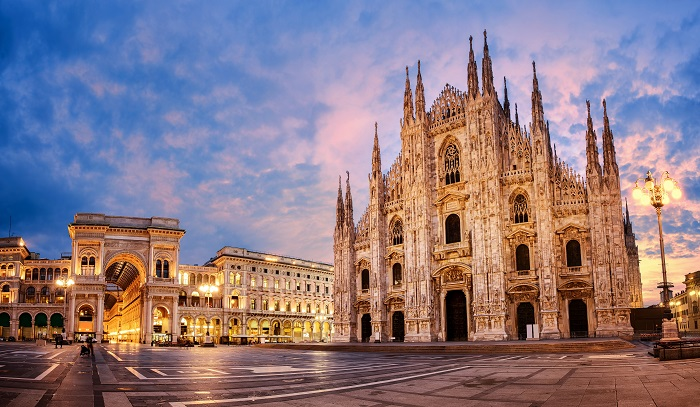

Panorámica de Düsseldorf

Plaza del Duomo - Milán

Visita a Milán
Tour Eiffel Paris

Ciudades europeas que he visitado
Aquí tenéis una muestra de alguno de los sitios en que he estado, concretamente las tres últimas ciudades europeas que he visitado fuera de nuestras fronteras.